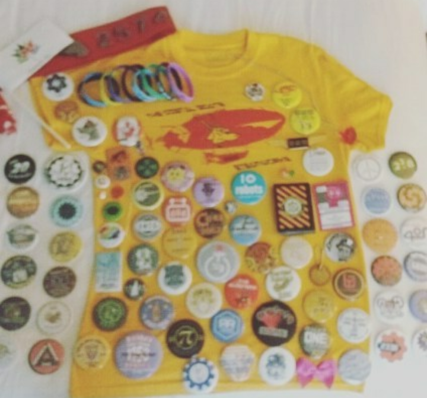
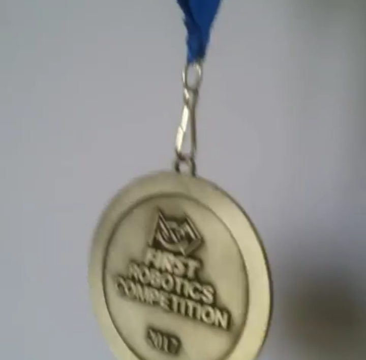
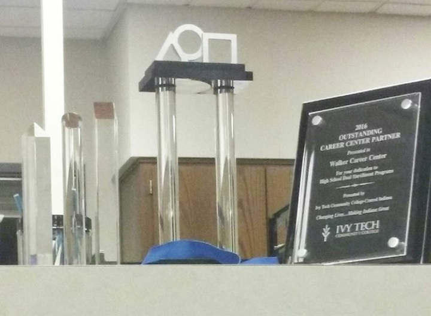

In Cold Blood

Animal Farm

And Then There Were None

In the Time of the Butterflies
I am incredibly independent in my thoughts and my actions. Unlike many women that I have met, I am driven towards the sciences. My goal is to obtain a degree from a formidable school in chemical engineering. This way I can help people using science in the same way that modern science has helped me. Furthermore, I have a strong interest in building a life for myself. I want to be well rounded in my knowledge of politics, the arts, and works of literature. I will no doubt expose myself to such things over time.
| My Favorite Books | Places I Want to Go | My Plans |
|---|---|---|
In Cold Blood | Italy | Go to College |
Animal Farm | Greece | Travel |
And Then There Were None | Germany | Get a Stable Job |
In the Time of the Butterflies | Anywhere With Mountains | Start a Family |
| VRC | FRC |
|---|---|
|  | |
|  | |
|  | |
|
|---|
And I watch raindrops fall
Into a puddle,
And a teardrop
From my eye.
It is not sadness that brings it there,
But my love for you--
Like the oncoming sun--
And then yours for me.
Which ultimately calms the tears again,
And puts me at peace.